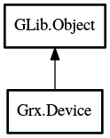

Device
Object Hierarchy:

Description:
public abstract class Device : Object
Base class for objects that represents in input device.
Content:
Properties:
- public string name { get; }
A descriptive name of the device, suitable for displaying to the user.
- public string sysname { get; }
The sysfs name of the device.
- public bool has_keyboard { get; }
Indicates that a device can produce key events.
- public bool has_pointer { get; }
Indicates that a device can produce button/motion events.
- public bool has_touch { get; }
Indicates that a device can produce touch events.
Methods:
Inherited Members:
All known members inherited from class GLib.Object
- @new
- newv
- new_valist
- get_type
- get_class
- @ref
- unref
- ref_sink
- weak_ref
- weak_unref
- add_weak_pointer
- remove_weak_pointer
- @get
- @set
- get_property
- set_property
- get_data
- set_data
- set_data_full
- steal_data
- get_qdata
- set_qdata
- set_qdata_full
- steal_qdata
- freeze_notify
- thaw_notify
- dispose
- constructed
- notify_property
- connect
- disconnect
- add_toggle_ref
- remove_toggle_ref
- bind_property
- notify
- ref_count